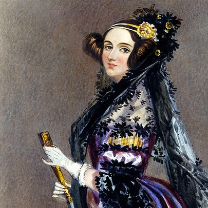
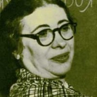
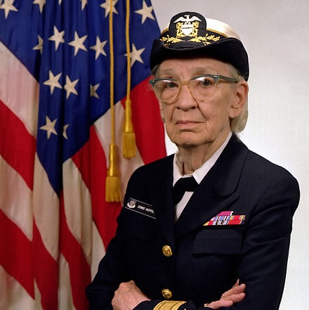
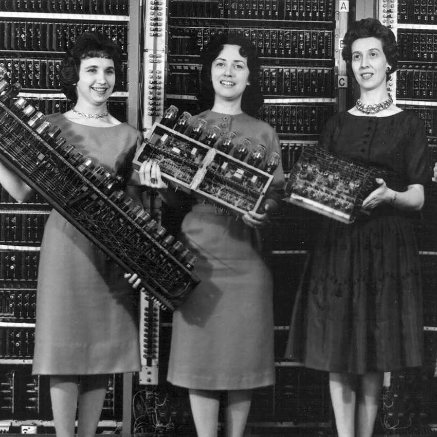
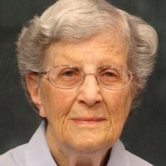
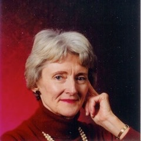
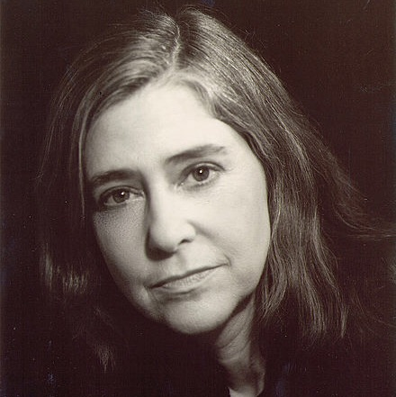
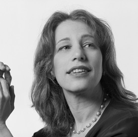
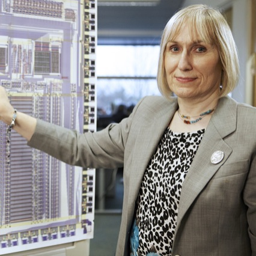

WOMEN OF THE COMPUTATION REVOLUTION
People in my generation lived right through what will, when my great grand children study history in school, be taught the way we all learned about the “Industrial Revolution”. It took its first baby steps in the 1940s, was in full swing in the 1970s, and is in its third wave today. Women have been and continue to be instrumental in this change.
-

Ada Lovelace ~ 1815 –1852
This brilliant 19th century mathematician is credited as the world's first computer programmer even though she died a hundred years before the first real computers. Her intuition about the power and applicability of machine computation to many problems even beyond calculation were decades ahead of her peers. The "Ada" programming language developed by the DoD in the late '70s was named in her honor. She was a fascinating academic and a real pioneer and her story deserves to be told more widely.
-

Ida Rhodes ~ 1900 – 1986
Ida Rhodes' influence in the early computer revolution was widespread. She was a programmer, responsible for major early advanced computer systems for, eg, the Social Security Administration. She worked on the design of several nascent programming languages. And she did pioneering work on machine translation of human languages, in particular translating her native Russian to English.
-
Grete Hermann ~ 1901 – 1984
Although not a computer scientist, German mathematician Grete Hermann's pioneering work on so called "computer algebra" is the foundation of the computer science behind some of the most advanced software in existence today. She defined the first algorithms that tackle computational problems symbolically, opening up an entire class of advanced computation to computers for the first time.
-

Grace Hopper ~ 1906 – 1992
The earliest computer programming languages were extremely low level symbolic codes tied intimately to the type of computer you were working on. If you wanted your stuff to run on a different machine you had to learn a new "assembly language" and port it meticulously. Grace Hopper pioneered modern "compiled" programming languages and promoted the now-standard concept of machine independent programming. She had a long and hugely influential career with the US Navy. And she is one of my heroes.
-

The ENIAC Programmers ~ 1943
The Electronic Numerical Integrator and Computer or ENIAC was the worlds first electronic general purpose computer. And its programmers were all women: Kay McNulty, Betty Jennings, Betty Snyder, Marlyn Wescoff, Fran Bilas and Ruth Lichterman. These women translated mathematical formulae related to military ballistics targeting into computer code and reconfigured the ENIAC to execute the code by adjusting switches and cables, making them the first modern professional programmers.
-

Jean Sammet ~ 1928 –
Jean Sammet was the first female president of the Association for Computing Machinery, the primary academic computer society. She was also a pioneering programmer and an early scholar in the field of computer languages. She was the first to comprehensively catalog and categorize programming languages, something every modern computer science student studies extensively.
-

Mary Wilkes ~ 1937 –
Mary Wilkes is an influential pioneer of personal computing. She worked on the LINC project, an early predecessor to the "personal" computer in an era when computers were room-sized, cost hundreds of thousands of dollars, and were meant to be shared by entire organizations. She programmed the first operating system for a minicomputer and is widely believed to be the first person to use a computer at home.
-

Margaret Hamilton ~ 1936 –
With self-driving cars in the works, the notion of ultra-high-reliability computer systems is timely. Margaret Hamilton lead the design of the computerized navigation system in the Apollo mission responsible for flying to and landing on the moon. More importantly to the industry, she helped develop the computing concepts still in use today when computer systems demand absolute reliability. The Google Car owes a debt of gratitude to Hamilton and her pioneering work.
-

Susan Kare ~ 1954 –
Apple arguably defined modern desktop computing with the release of the Macintosh in 1984, the first comprehensive well considered deep and wide graphical user interface. Artist Susan Kare was the person at Apple who gave that new user interface its visual style. She designed everything from the fonts to the icons to the user interface elements. She went on to Microsoft and beyond, and her clean, friendly, iconic pixel designs were hugely influential and can still be felt in interfaces today.
-

Sophie Wilson ~ 1957 –
All the action in computers today is around mobility: small, connected, power efficient computers like your iPhone. Mobility is made possible by the forward-thinking design of the ARM CPU, a 1990s-born computer chip capable of performing well while using as little power as possible. Sophie Wilson designed the "instruction set" for ARM, the collection of programming capabilities and operations these chips support, and helped set the stage for this latest sprint in the computation revolution.
-
Marissa Mayer ~ 1975 –
Marissa Mayer was Google employee #20, the first female engineer hired at the male-dominated company in male-dominated Silicon Valley. She rapidly advanced eventually becoming the director responsible for Google's consumer facing web presence — which is to say the part of Google you use every day. She designed Google's search page. She currently has her work cut out for her as the most powerful female CEO in the industry, at Yahoo.